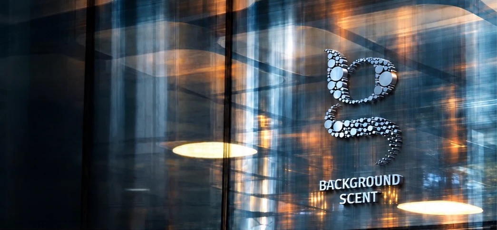
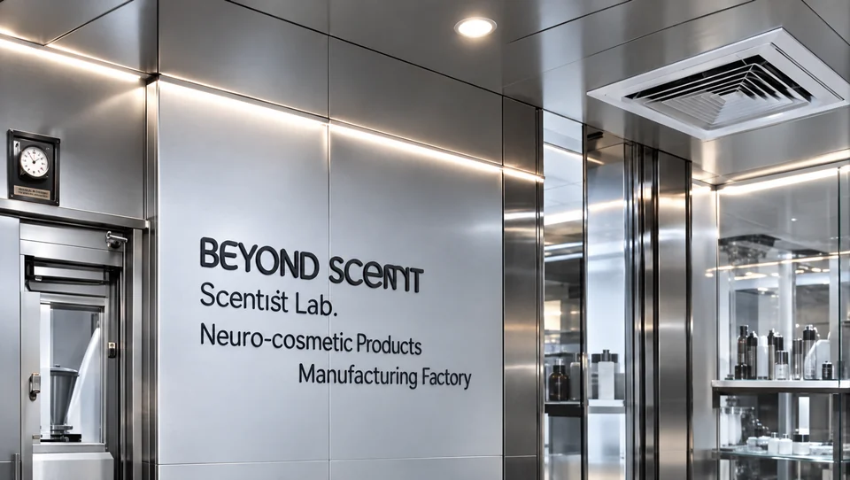

台北
Scentist Inc.
Scentist Lab Inc.
Arotec Corporation
Arotec Flavor & Fragrance Inc.
台北市内湖区
台湾

新製品の開発、新市場の開拓、感覚的な品質の向上、戦略的なイノベーションパートナーの探索など、多分野の専門家からなる私たちのチームが協働します。
インサイトとコンセプトの開発から、処方設計、感覚戦略、実装まで、アイデアを意義あるソリューションに変えるお手伝いをします。
フォームにご記入いただければ、担当チームからご連絡します。
*の付いた項目は必須です。
お客様の情報は秘密として取り扱います。
この操作を完了できませんでした。もう一度お試しください。
この静的プレビューではお問い合わせフォームを送信できません。arotec@arotec-group.com 宛てにメールでArotecへお問い合わせください。 Arotecにメールを送る
Scentist Inc.
Scentist Lab Inc.
Arotec Corporation
Arotec Flavor & Fragrance Inc.
Arotec (Thailand) Co., Ltd.
6/24 Soi Phrom SiArotec (Japan) Co., Ltd.
305号室Background Scent Corporation
10666 Churchill Place
台湾のニューロコスメティクス工場
1段79号11階-3プロジェクト、アイデア、課題をお持ちですか？取り組んでいる内容をお知らせいただければ、こちらからご連絡します。